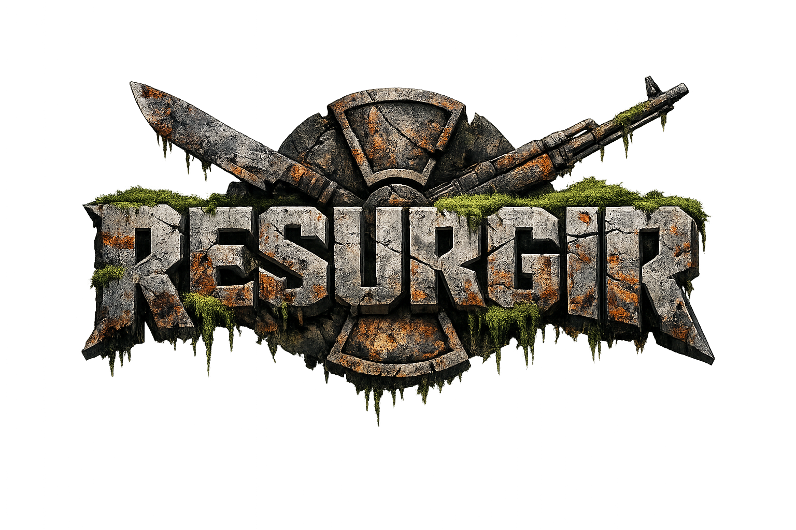

// Sistema de gestión de asentamiento post-apocalíptico
Acceso principal
Lidera a tus supervivientes, gestiona recursos, afronta amenazas y mantén con vida el asentamiento un día más.
Iniciar partida
Creator